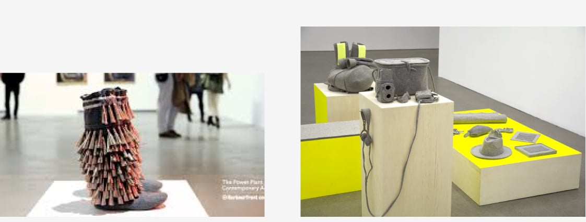

For this project, I have chosen to tackle to work on the web poster of the event "Maria Hupfield: The One Who Keeps On Giving." First of all, I researched what type of event it is so that I can reflect it towards the design I wanted to do. I went to the website of the event and it mentioned that it is an event to show arts and culture from Canadian First Nations artist Maria Hupfield. Diving deeper into my research about Maria Hupfield I found out that she is Anishinaabe specifically Ojibwe. In another course, I learned that the first peoples of Canada has their own syllabics, so I had to include a similar typeface to the Cree syllabics into my poster somehow. I looked up a poster of an event for Canadian First Nations and I found one with a typeface that I liked.
I used a font matching site to figure out what font the title of the poster was. I came across a very similar font in Adobe fonts called "P22 Arts and Crafts Bold" which I chose to use in the final version of the webpage. For the text of "Maria Hupfield", I did some trial and errors to see other fonts that would look similar to the way that the written Cree syllabics are geometric. I decided to use the font "Megrim" from Google Fonts since it matches my criteria most.
For the body copy, it was easy to find the font that I wanted to use. On the Adobe Fonts page of "P22 Arts and Crafts Bold", there was some font pairing suggestions. These suggestions are very helpful since it was not hard for me to choose a typeface that fits well to my concept. I chose the font "Transat Standard" for my final webpage since I love how the font is sharp and geometric while also being legible.
Finding out what layout fits best to the event was not easy. While having to perfectly fit the event, the layout must be simple enough so that I would not have a difficult time creating it. I made three ideas in Figma of what the layout might look like.
As you can see the first layout idea was based on the Medicine Wheel tradition of the Canadian First Nation. At first, I had an idea that for each of the coloured tiles of the Medicine Wheel it would zoom in on hover to fill the page. However, that idea quickly failed since I do not like the layout and how the colours are working together and with the event. Also, it was difficult to place the event information logically
The second layout idea was inspired by the layout of the exhibition itself. Using the neon yellow background and simple shapes such as squares, rectangles, and circles I could replicate the layout of the exhibition on the webpage. I like this idea even more than the first one, but the problem was that I could not think of creative interactions that the user could do on the webpage that would fit the aesthetic of the exhibition. What I tried with this layer was making the title glow which is pretty cool, but it did not exactly fit the contemporary look I was looking for.
The third layout idea was taken from "Jingle Boots" which was one of the featured works of Maria Hupfield on the exhibition. I noticed that many of Hupfield's featured works display fringes. I thought that it would be interesting to re-create these fringes on my poster webpage and have it swing out to reveal the information of the event beneath it. As the call-to-action buttons, I wanted to keep in mind the layout of the exhibition display to make an interesting menu.
One of the most challenging aspects to making the poster webpage was to figure out how to make the fringes swing and putting the information on the background. To make the layout of the fringes, I made a prototype webpage to test out how the fringes would work.
On this prototype, the most demanding work was to hide the information behind the fringes so that it would not show on top or overflow the fringes. I decided to widen the fringes so that the information behind can be hidden perfectly behind them while not making the width too thin since that would make reading the information too difficult. I learned that I could put the event information behind the fringes by using the z-index which added a depth layering aspect to the webpage.
Once I figured out the logic behind the fringes, I started creating the final webpage. I spent many hours making the layout perfect with functioning animation. First, I dealt with the title and the subtitles of the event information.
Then, I added the footer of the webpage. I wanted the footer to inform the viewers about the sponsors of the event since in my previous experiences I have noticed that the footer is where sponsors are located typically.
The next thing I added was the menu. I knew I wanted the menu to be interesting to interact with. I looked at other event websites and I came across the website for the Casa Loma. I see that their menu was in the header which I want to replicate with my layout.
I still was inspired to create something that reflect the layout of the exhibition display. I attempted to replicate the way that Hupfield placed the objects on the display which was tilted and not perfectly aligned.
Using CSS grid, I was able to lay everything out the way I wanted fairly easily. I even added animation to the menu which at the end I was very happy with the result.
Moving on with the project, I added a page for the about section. I realized that putting the about section on the landing page would make it too crowded. With this about page, I wanted to have a similar style of menu that I created for the main page. Instead of using the circle shape to go back, I used the triangle pointed to the left and added animation to that as well.